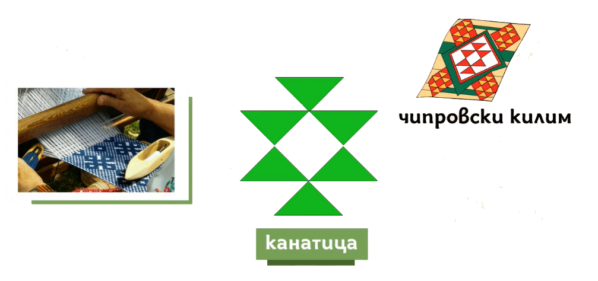
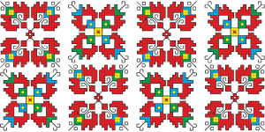

Фигурите в шевиците също се използват за предаване на дълбока символика, отразяваща духовните и културни вярвания на българския народ. Чрез сложни мотиви и комбинации, нашите предци са изразявали връзката с природата, семейството и философията на живота. Основните фигури, използвани при създаването на везбените орнаменти включват:
Стилизиране на Геометрични фигури е често срещана практика при създаването на едни от най-разпознаваемите шевици в нашия фолклор. Свързвали се със семейството, плодовитостта и благоденствието на рода. Използват се прави и начупени линии, кръгли форми, квадрати, триъгълници, розети и т.н. Най-популярната геометрична фигура е ромбът. Той символизира женското и земното плодородие, както и мъжкото желание за плодовитост. Именно затова се поставя на ключови места по дамското и мъжкото облекло, напр. около пазвата, ръцете, гърдите и по престилките на момите.
Растителните орнаменти
също присъстват във везбите, отново свързвайки се със семейството, плодовитостта, мира и изобилието.
Най-старите везбени орнаменти са Животинските, но за сметка на това са значително по-малко на брой. Срещат се както самостоятелно, така и в комбинация. В тях се залага различна символика, според представеното животно, напр. петелът и конят се свързват със слънцето, докато на пауна се придават защитни свойства.
Според народните вярвания шевиците със Слънчевите фигури служат за защита от болести, беди и уроки, затова се бродират на специални места – по края на дрехите, около пазвата, на забрадката и на накитите на жените. Те имат много древен произход.
Родовите знаци се отнасят до използването на специфични фигури, носещи послание за продължаване на рода и сродяване. Това са стилизирани символи за годеж, семейна хармония и сватба.
Основни мотиви
Мотивите в българските шевици са изключително разнообразни и обикновено носят дълбоко символично значение, което е свързано с природата, духовността и живота на българския народ. Те са предавани през поколенията и често отразяват вярвания, надежди и традиции. Всеки мотив има свой смисъл и се използва в определени контексти – за защита, здраве, плодородие, любов и щастие.
Геометрични мотиви
Геометричните форми в българските шевици са много популярни и могат да бъдат открити в почти всички региони на страната. Те обикновено включват:
Кръгове и спирали:Символизиращи вечността, цикличността на живота, слънцето и безкрайността.
Зигзагообразни линии: Те често се асоциират с енергията, динамиката и движението. Смятат се за защита от злото и за предвестие на промени.
Триъгълници и квадрати: Тези фигури представляват основни елементи от природата, както и баланс и стабилност.
Флорални мотиви
Цветята и растенията са сред най-често срещаните мотиви в българските шевици. Те символизират жизнената сила, плодородието, красотата и благоденствието.
Рози и лалета:Розата е символ на любовта, а лалето — на красотата и хармонията. Възможно е също така да се свързват с божественото начало и женската сила.
Детелини и звезди: Често се използват за символи на късмет, здраве и защита от зли сили.
Дървета и храсти: Те често изразяват дълбокото уважение към природата и символизират стабилност и закрила. Брезата, например, е символ на чистотата и новото начало.